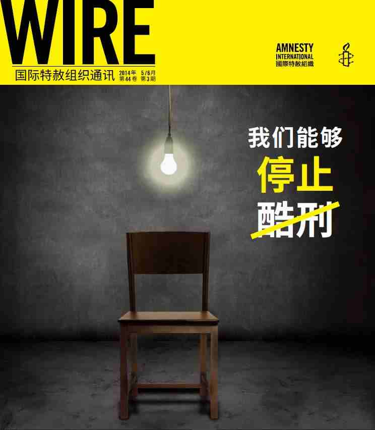

跳转到主要内容
2019年度报告
我们是谁
我们的工作
如何参与
网络联署
加入我们
人权公开课
最新消息
搜索
搜索字段
搜索
立即行动
主菜单
2019年度报告
我们是谁
我们的工作
如何参与
展开 如何参与 子列表
网络联署
加入我们
人权公开课
最新消息
立即行动
Human rights lawyer Nasrin Sotoudeh photographed in the garden of her office. Photo by Kaveh Kazemi/Getty Images)
主题
内容类别
区域/国家
上一个
下一个
813 结果
排序方式
最近
按最早优先
标题 - 提升
标题 - 降序
WIRE通讯
2014年7月1日
《Wire》 2014年 ７ –８ 月: 酷刑就是你我的事

WIRE通讯
2014年5月1日
《Wire》 2014年 ５ –６ 月: 想象一个没有酷刑的世界
最新消息
2014年3月19日
一位鼓舞人心的活动人士 —— 悼念曹顺利
WIRE通讯
2014年3月1日
《Wire》 2014年 3 – 4 月: 改变世界的两种方式
出版物
2014年1月1日
2014 《中国的酷刑和镇压用具贸易》（报告概要）
WIRE通讯
2014年1月1日
《Wire》 2014年 1 – 2 月: 我的身体，我的权利（My Body My Rights）
WIRE通讯
2013年11月1日
《Wire》 2013年 11 – 12 月: 为人权，不停笔（Write for Rights）
出版物
2013年10月1日
2013 国际特赦组织向联合国普遍定期审议提交的报告
WIRE通讯
2013年9月1日
《Wire》 2013年 9 –10 月: 人权行动的感染力
学习资源
2013年8月18日
2013《我们的权利》
出版物
2013年8月18日
2013《利润和损失：刚果民主共和国加丹加省的采矿和人权状况》
出版物
2013年8月18日
2013 中国——国际特赦组织向联合国经济、社会和文化权利委员会提交的报告
上一个
1
…
64
65
66
…
68
下一个